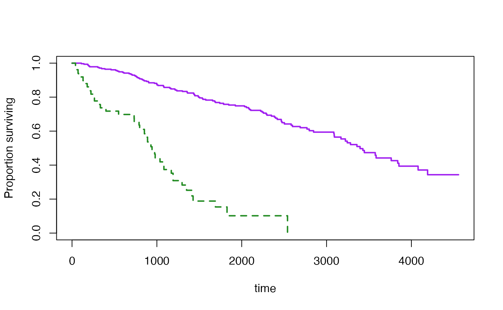
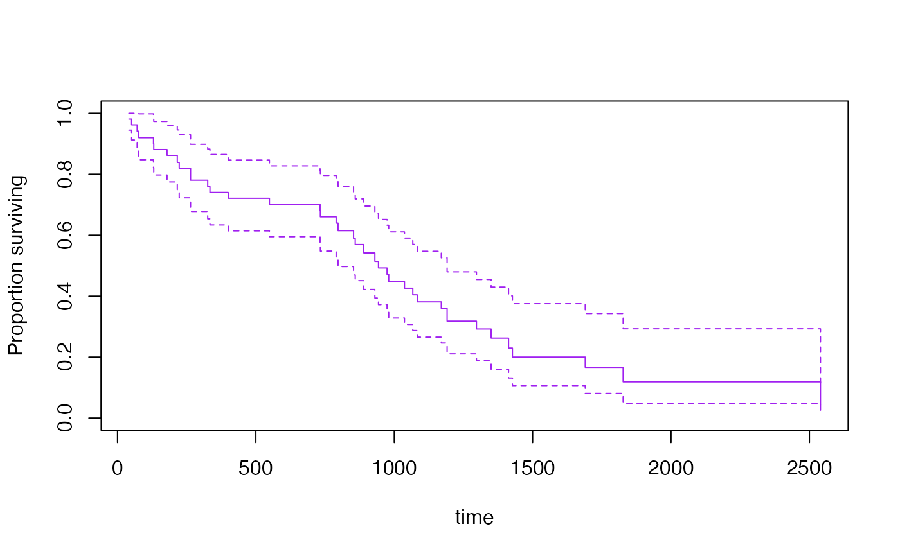

svykm.RdEstimates the survival function using a weighted Kaplan-Meier estimator.
svykm(formula, design,se=FALSE, ...)
# S3 method for svykm
plot(x,xlab="time",ylab="Proportion surviving",
ylim=c(0,1),ci=NULL,lty=1,...)
# S3 method for svykm
lines(x,xlab="time",type="s",ci=FALSE,lty=1,...)
# S3 method for svykmlist
plot(x, pars=NULL, ci=FALSE,...)
# S3 method for svykm
quantile(x, probs=c(0.75,0.5,0.25),ci=FALSE,level=0.95,...)
# S3 method for svykm
confint(object,parm,level=0.95,...)Two-sided formula. The response variable should be a right-censored
Surv object
survey design object
Compute standard errors? This is slow for moderate to large data sets
in plot and lines methods, graphical
parameters
a svykm or svykmlist object
as for plot
Line type, see par
Plot (or return, forquantile) the confidence interval
A list of vectors of graphical parameters for the
separate curves in a svykmlist object
A svykm object
vector of times to report confidence intervals
confidence level
survival probabilities for computing survival quantiles
(note that these are the complement of the usual
quantile input, so 0.9 means 90% surviving, not 90% dead)
For svykm, an object of class svykm for a single curve or svykmlist
for multiple curves.
When standard errors are computed, the survival curve is actually the Aalen (hazard-based) estimator rather than the Kaplan-Meier estimator.
The standard error computations use memory proportional to the sample size times the square of the number of events. This can be a lot.
In the case of equal-probability cluster sampling without replacement the computations are essentially the same as those of Williams (1995), and the same linearization strategy is used for other designs.
Confidence intervals are computed on the log(survival) scale,
following the default in survival package, which was based on
simulations by Link(1984).
Confidence intervals for quantiles use Woodruff's method: the interval is the intersection of the horizontal line at the specified quantile with the pointwise confidence band around the survival curve.
Link, C. L. (1984). Confidence intervals for the survival function using Cox's proportional hazards model with covariates. Biometrics 40, 601-610.
Williams RL (1995) "Product-Limit Survival Functions with Correlated Survival Times" Lifetime Data Analysis 1: 171--186
Woodruff RS (1952) Confidence intervals for medians and other position measures. JASA 57, 622-627.
predict.svycoxph for survival curves from a Cox model
data(pbc, package="survival")
pbc$randomized <- with(pbc, !is.na(trt) & trt>0)
biasmodel<-glm(randomized~age*edema,data=pbc)
pbc$randprob<-fitted(biasmodel)
dpbc<-svydesign(id=~1, prob=~randprob, strata=~edema, data=subset(pbc,randomized))
s1<-svykm(Surv(time,status>0)~1, design=dpbc)
s2<-svykm(Surv(time,status>0)~I(bili>6), design=dpbc)
plot(s1)
plot(s2)
plot(s2, lwd=2, pars=list(lty=c(1,2),col=c("purple","forestgreen")))

quantile(s1, probs=c(0.9,0.75,0.5,0.25,0.1))
#> 0.9 0.75 0.5 0.25 0.1
#> 708 1356 3092 Inf Inf
s3<-svykm(Surv(time,status>0)~I(bili>6), design=dpbc,se=TRUE)
plot(s3[[2]],col="purple")

confint(s3[[2]], parm=365*(1:5))
#> 0.025 0.975
#> 365 0.63361572 0.8647973
#> 730 0.59486017 0.8272783
#> 1095 0.26557946 0.5472405
#> 1460 0.10663428 0.3752484
#> 1825 0.08082427 0.3429355
quantile(s3[[1]], ci=TRUE)
#> 0.75 0.5 0.25
#> 1925 3395 Inf
#> attr(,"ci")
#> 0.025 0.975
#> 0.75 1504 2386
#> 0.5 3092 4079
#> 0.25 Inf Inf